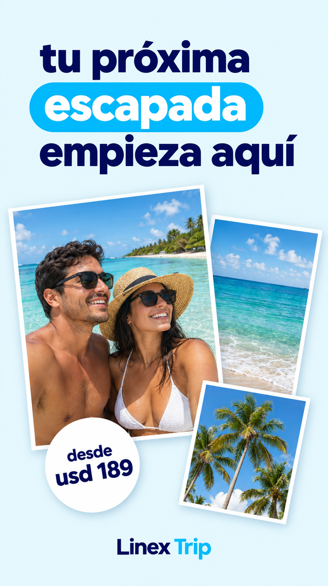
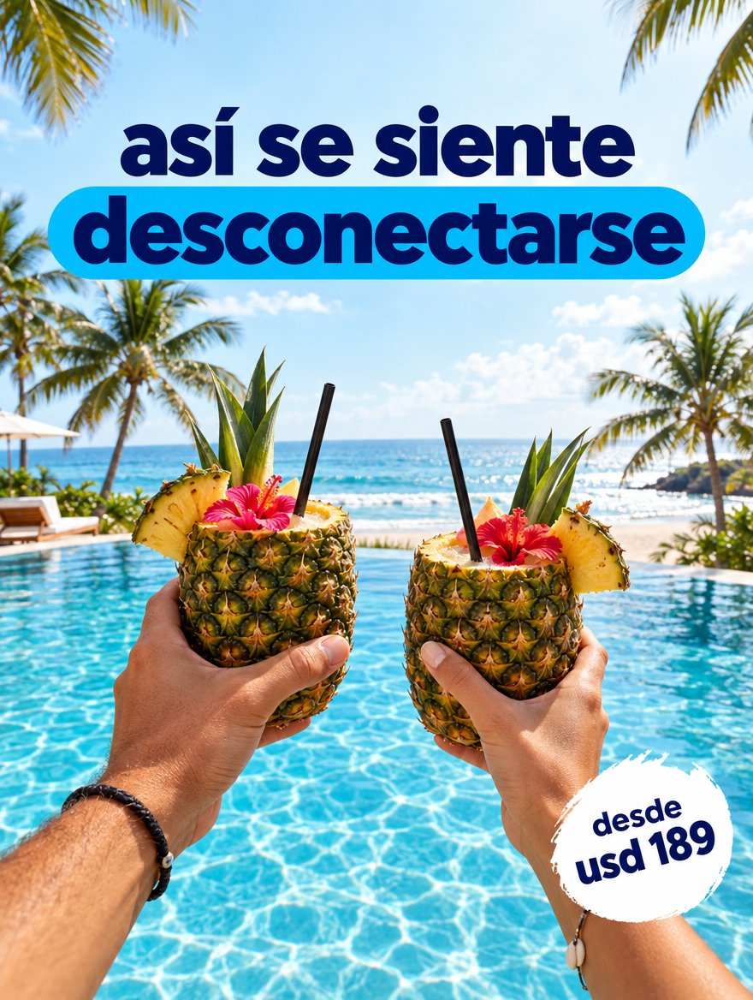
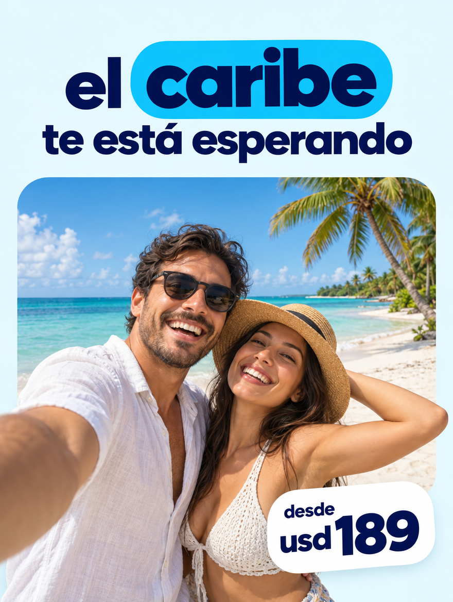
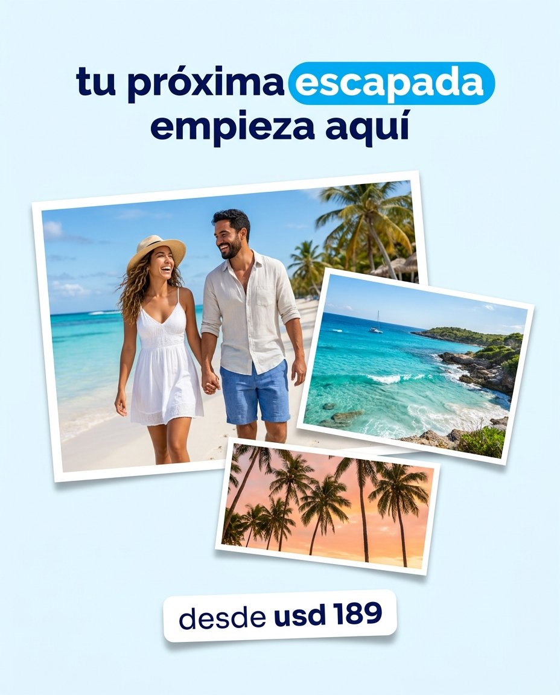
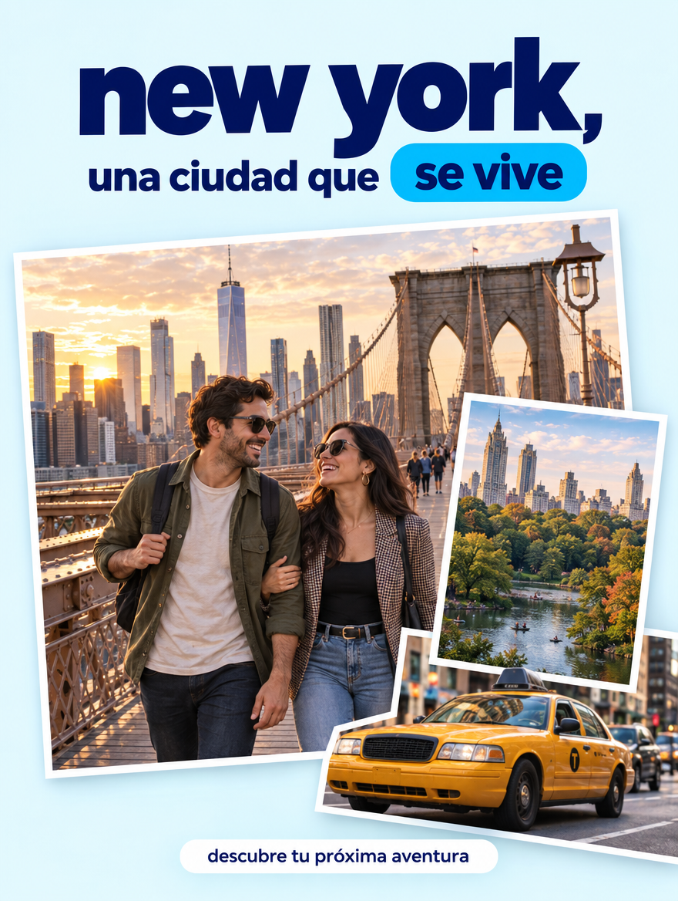
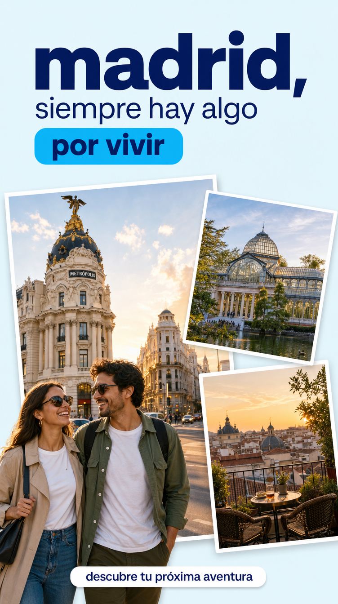
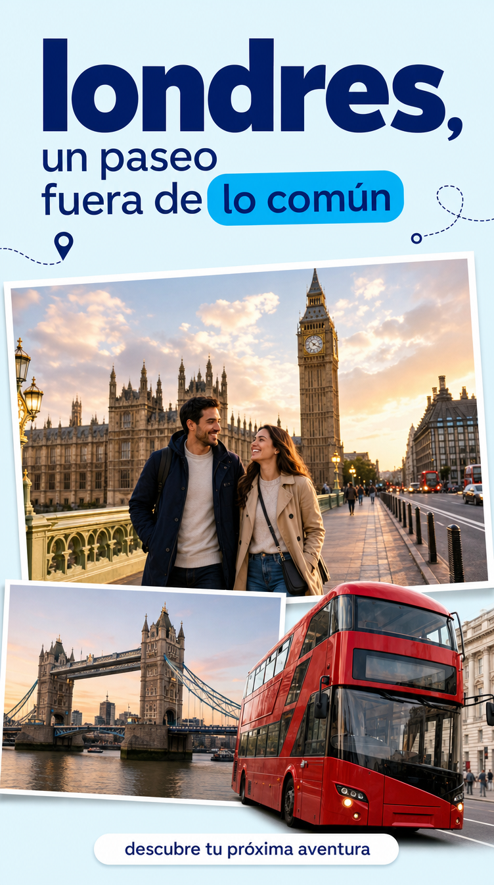
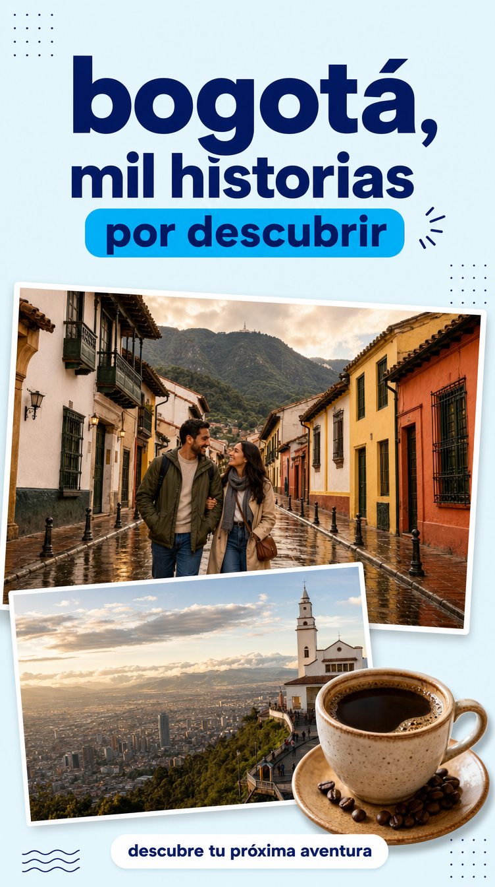

15Redes socialesSocial media
Lo que ya funciona en redes, y cómo pedirlo con IA sin perder la marcaWhat already works on social, and how to ask AI for it without losing the brand
Lenguaje gráfico literal observado en 15 referencias entregadas por el dueño de marca (posts de una aerolínea aliada), formatos de pieza para redes sociales, y una plantilla de prompt reutilizable para generación de imagen con IA (Higgsfield, kie.ai u otras herramientas externas que el dueño de marca conecta por su cuenta, fuera de este proyecto).A literal graphic language observed across 15 references supplied by the brand owner (posts from a partner airline), social media piece formats, and a reusable prompt template for AI image generation (Higgsfield, kie.ai or other external tools the brand owner connects on their own, outside this project).
Lenguaje gráfico observado en 15 referenciasGraphic language observed across 15 references
13 de las 15 referencias entregadas muestran contenido y marca de una aerolínea aliada (Arajet: logotipo, nombre, avión rotulado con su librea). Se toman aquí únicamente como referencia de lenguaje gráfico y de formato — ningún elemento de su marca (logo, nombre, HEX exacto) debe reproducirse literalmente en una pieza de Linex Trip.
13 of the 15 references supplied show content and branding from a partner airline (Arajet: logo, name, a plane liveried in its colours). They’re used here purely as reference for graphic language and format — no element of its brand (logo, name, exact HEX) should be reproduced literally in a Linex Trip piece.
Formatos de redes socialesSocial media formats
| Formato | Tamaño |
|---|---|
| Format | Size |
| Feed post | 1080×1350px (4:5) |
| Feed post | 1080×1350px (4:5) |
| Story / Reel cover | 1080×1920px (9:16) |
| Story / Reel cover | 1080×1920px (9:16) |
| Carrusel | 1080×1350px, 3–10 slides |
| Carousel | 1080×1350px, 3–10 slides |
| Portada Facebook | 1200×630px |
| Facebook cover | 1200×630px |
| Avatar / perfil | 500×500px (círculo) |
| Avatar / profile | 500×500px (circle) |
Zona segura: sin texto en el tercio inferior de story/reel (lo cubre la UI de la plataforma). El indicador “n/N” va siempre visible en la esquina superior de un carrusel.Safe zone: no text in the bottom third of a story/reel (the platform’s UI covers it). The “n/N” indicator is always visible in the top corner of a carousel.
Decisiones del dueño de marcaBrand owner decisions
Las referencias solo aportan lenguaje visual/compositivo (fotografía, collage, tipografía, formatos) — el kit de redes sociales de Trip usa siempre su paleta oficial, nunca la de la referencia.
The references only contribute visual/compositional language (photography, collage, typography, formats) — Trip’s social media kit always uses its official palette, never the reference’s.
Sólido (como la referencia) vs. la librería oficial en Classic Regular — el dueño de marca lo define después. Mientras tanto, cualquier pieza real usa Classic Regular, que es la regla vigente para todos los canales; el estilo sólido para redes queda como excepción a aprobar, no como práctica. En cualquiera de los dos casos, el color del ícono lo fija la tabla de contraste de la 05 · Iconografía: sobre fondo claro nunca en Celeste.
Solid (like the reference) vs. the official library in Classic Regular — the brand owner will define it later. In the meantime, any real piece uses Classic Regular, which is the rule currently in force for every channel; the solid style for social media stays an exception to be approved, not a practice. In either case, the icon’s colour is set by the contrast table in 05 · Iconography: never Sky on a light background.
Cómo se arma una pieza de InstagramHow an Instagram piece is put together
Los tamaños de arriba dicen el lienzo; esto dice qué va adentro. Las tres piezas están armadas con el sistema ya documentado — radios, sombras, degradado de lectura y tarjeta de precio de 06 · Sistema gráfico, CTA de 13 · Promociones y CTA — y usan marcador de color en vez de foto, porque Trip todavía no tiene banco fotográfico propio.The sizes above give the canvas; this says what goes inside it. The three pieces are built with the system already documented — radii, shadows, legibility gradient and price card from 06 · Graphic system, CTA from 13 · Promotions and CTAs — and use a colour placeholder instead of a photo, because Trip doesn’t have its own photo bank yet.
Reglas durasHard rules
- Margen seguro: 120px arriba y abajo en story/reel — ahí van el nombre de usuario, la barra de progreso y el “Desliza hacia arriba” de la plataforma. Nada crítico entra en esa franja: ni titular, ni precio, ni CTA.
- Safe margin: 120px top and bottom on story/reel — that’s where the platform puts the username, the progress bar and “Swipe up”. Nothing critical goes in that strip: no headline, no price, no CTA.
- Primera lámina: titular + beneficio concreto, nada más. Si la primera lámina no se entiende sola, el carrusel no se abre.
- First slide: headline + concrete benefit, nothing more. If the first slide doesn’t stand on its own, the carousel doesn’t get opened.
- Última lámina: un solo CTA, de la biblioteca aprobada, con flecha. Nunca dos opciones compitiendo.
- Last slide: a single CTA, from the approved library, with an arrow. Never two options competing.
- El precio nunca va suelto sobre la foto: va en tarjeta blanca o Azul Trip, con USD y COP visibles. Sobre foto sin respaldo, el contraste depende de la imagen y deja de ser auditable.
- The price never sits loose over the photo: it goes on a white or Trip Blue card, with USD and COP visible. Loose over a photo, contrast depends on the image and stops being auditable.
- Un solo CTA por pieza, y el titular en máximo 2 líneas — en el feed comprimido, la tercera línea ya no se lee.
- One CTA per piece, and the headline in a maximum of 2 lines — in the compressed feed, a third line no longer reads.
- El perfil: avatar circular de 500×500px en Azul Trip con el monograma en Celeste, bio “Viaja Inteligente” y hashtags propios #ViajaInteligente y #LinexTrip. Un solo CTA por post, también en la bio.
- The profile: circular avatar 500×500px in Trip Blue with the monogram in Sky, bio “Travel Smart” and its own hashtags #TravelSmart and #LinexTrip. A single CTA per post, also in the bio.
- Texto alternativo obligatorio en cada publicación: lo que dice la imagen se escribe también ahí (ver 05 · Iconografía, accesibilidad en redes).
- Mandatory alt text on every post: whatever the image says gets written there too (see 05 · Iconography, accessibility on social media).
Las piezas armadasThe assembled pieces
Reglas de uso de IA para producir contenidoAI usage rules for producing content
Esto es distinto de las reglas de comportamiento de agentes conversacionales de cara al cliente, definidas a nivel de todo el grupo y fuera del alcance de este documento — lo de aquí aplica específicamente a cómo el equipo de Trip produce piezas de marca (imagen, copy, traducción) con ayuda de IA.This is different from the behaviour rules for customer-facing conversational agents, defined at the group-wide level and outside this document's scope — what's here applies specifically to how the Trip team produces brand pieces (image, copy, translation) with AI help.
- Borradores de copy, siempre revisados por una persona antes de publicar.
- Copy drafts, always reviewed by a person before publishing.
- Imágenes generadas para pruebas internas, moodboards o wireframes.
- Images generated for internal tests, moodboards or wireframes.
- El kit de prompt de esta página, siguiendo la plantilla de 7 pasos de abajo.
- This page’s prompt kit, following the 7-step template below.
- Traducción asistida, siempre revisada por un hablante nativo.
- Assisted translation, always reviewed by a native speaker.
- Imágenes de personas generadas por IA presentadas como fotografía real de viajeros o testimonios (ver criterio fotográfico en 06 · Sistema gráfico y fotografía).
- AI-generated images of people presented as real photography of travellers or testimonials (see photographic criteria in 06 · Graphic system and photography).
- Publicar copy o precios generados por IA sin revisión humana.
- Publishing AI-generated copy or prices with no human review.
- Generar logotipos, variaciones de marca o paletas nuevas con IA — los oficiales están en 01 · Logotipo, 03 · Paleta de color y en
brand-tokens.json. - Generating logos, brand variations or new palettes with AI — the official ones live in 01 · Logo, 03 · Colour palette and in
brand-tokens.json.
Plantilla reutilizable de prompt para generación de imagen con IAReusable prompt template for AI image generation
Para escribir un prompt hacia una herramienta externa (Higgsfield, kie.ai u otra) que ya parta de la marca, completa estos 7 pasos en orden. Los tres ejemplos de abajo muestran la plantilla ya aplicada.To write a prompt for an external tool (Higgsfield, kie.ai or another) that already starts from the brand, complete these 7 steps in order. The three examples below show the template already applied.
Describe el sujeto, la acción y el destino de forma literal y concreta.Describe the subject, the action and the destination literally and concretely.
Realista, luz natural cálida, alta saturación — nunca CGI evidente ni banco de imágenes genérico.Realistic, warm natural light, high saturation — never obvious CGI or generic stock photography.
Wordmark “Linex Trip”, Geist ExtraBold/Black, “Linex” en Azul Trip #00145A y “Trip” en Celeste #00B5F5, sobre blanco o navy — nunca sobre fondo celeste sólido — con zona de seguridad igual a la altura de la “L” de Linex en los 4 costados.Wordmark “Linex Trip”, Geist ExtraBold/Black, “Linex” in Trip Blue #00145A and “Trip” in Sky #00B5F5, on white or navy — never on a solid Sky background — with a safety zone equal to the height of the “L” in Linex on all 4 sides.
Azul Trip #00145A · Celeste Acción #00B5F5 · Lavanda Linex #DDE1FF · Celeste Cielo #E6F8FE · Blanco #FFFFFF · Negro Linex #080808 — paleta oficial de Trip, siempre.Trip Blue #00145A · Action Sky #00B5F5 · Linex Lavender #DDE1FF · Sky Blue #E6F8FE · White #FFFFFF · Linex Black #080808 — Trip’s official palette, always.
Collage por capas: foto a sangre + un bloque de texto plano en cápsula + como máximo un badge tipo sticker. Titular en mayúscula inicial — nunca sostenida —, bold condensado, máx. 2 líneas.Layered collage: full-bleed photo + a flat text block in a pill + at most one sticker-style badge. Headline with an initial capital — never sustained —, condensed bold, max. 2 lines.
Elige uno de la tabla de formatos de arriba y declara el aspect ratio exacto en el prompt.Pick one from the formats table above and state the exact aspect ratio in the prompt.
Logos de aerolíneas u otras marcas de terceros, texto generado ilegible, manos u ojos deformes, marcas de agua.Airline logos or other third-party brands, illegible generated text, deformed hands or eyes, watermarks.
Copia un ejemplo de abajo y ajusta solo la escena (paso 1) y el formato (paso 6) — los pasos 3 y 4 son fijos, no se editan por pieza.Copy an example below and adjust only the scene (step 1) and the format (step 6) — steps 3 and 4 are fixed, they don’t get edited per piece.
Prompts de ejemplo ya armadosReady-made example prompts
“Diseña una pieza publicitaria de viajes enfocada en New York, en formato 1080×1350px, vertical 4:5, con acabado editorial profesional para redes sociales. Usa las referencias adjuntas únicamente como inspiración para la composición en capas, los recortes fotográficos y la jerarquía visual. Crea un collage fotográfico realista de New York: una imagen principal del puente de Brooklyn con el skyline de Manhattan al fondo, una postal secundaria de Central Park y un taxi amarillo como detalle en primer plano. Incluye una pareja latinoamericana de unos 30 años caminando por el puente, con actitud espontánea y vestuario urbano contemporáneo. Luz cálida de atardecer, colores vivos equilibrados, piel natural y arquitectura reconocible sin distorsiones. Utiliza un fondo azul muy claro #E6F8FE. Las fotografías ocupan aproximadamente el 65% inferior de la composición, con bordes blancos, inclinaciones sutiles y sombras suaves. Permite que un elemento fotográfico sobresalga ligeramente de su marco para generar profundidad, sin cubrir textos ni rostros. En la parte superior, coloca el titular exacto ‘new york, una ciudad que se vive’, completamente en minúsculas. Destaca ‘new york’ en gran tamaño, con tipografía sans serif extra bold en Azul Trip #00145A. Sitúa ‘se vive’ sobre una pastilla sólida Celeste #00B5F5, con letras #00145A. Mantén una jerarquía clara y suficiente espacio entre líneas. Añade en la parte inferior una pastilla discreta con el texto exacto ‘descubre tu próxima aventura’, en minúsculas, color #00145A sobre blanco. Paleta exclusiva para fondos, textos y elementos gráficos: #00145A, #00B5F5, #E6F8FE y blanco. Conserva los colores naturales de las fotografías, incluido el amarillo del taxi. No uses Celeste #00B5F5 como texto sobre fondos claros. No incluyas ningún logo, nombre de marca, wordmark ni espacio reservado para logotipos —aprovecha la zona superior para el titular—. No añadas precios, descuentos ni información comercial no suministrada. Mantén márgenes seguros de 64px. Evita textos en mayúsculas, letras ilegibles, exceso de stickers, carteles publicitarios legibles, marcas de terceros, anatomía deformada, monumentos duplicados, marcas de agua y elementos que compitan con el titular.”“Design a travel ad piece focused on New York, 1080×1350px format, vertical 4:5, with a professional editorial finish for social media. Use the attached references only as inspiration for the layered composition, the photo cutouts and the visual hierarchy. Create a realistic photo collage of New York: a main image of the Brooklyn Bridge with the Manhattan skyline in the background, a secondary postcard of Central Park, and a yellow taxi as a foreground detail. Include a Latin American couple in their 30s walking across the bridge, with a spontaneous attitude and contemporary urban wardrobe. Warm sunset light, balanced vivid colours, natural skin and recognisable architecture with no distortions. Use a very light blue background #E6F8FE. The photographs occupy roughly the bottom 65% of the composition, with white borders, subtle tilts and soft shadows. Let one photographic element slightly overflow its frame to create depth, without covering text or faces. At the top, place the exact headline ‘new york, a city you live’, entirely in lower case. Feature ‘new york’ at large size, in extra bold sans serif type in Trip Blue #00145A. Place ‘you live’ on a solid Sky pill #00B5F5, with #00145A lettering. Keep a clear hierarchy and enough space between lines. Add a discreet pill at the bottom with the exact text ‘discover your next adventure’, in lower case, colour #00145A on white. Exclusive palette for backgrounds, text and graphic elements: #00145A, #00B5F5, #E6F8FE and white. Keep the photographs’ natural colours, including the taxi’s yellow. Don’t use Sky #00B5F5 as text on light backgrounds. Don’t include any logo, brand name, wordmark or reserved logo space —use the top area for the headline—. Don’t add prices, discounts or commercial information that wasn’t supplied. Keep 64px safe margins. Avoid uppercase text, illegible lettering, excess stickers, legible third-party ads, third-party brands, deformed anatomy, duplicated landmarks, watermarks and elements competing with the headline.”
“Crea un anuncio profesional de Linex Trip, vertical 4:5, de 1080×1350px. Toma de las referencias adjuntas la jerarquía tipográfica y el efecto de elementos fotográficos que sobresalen de sus marcos, respetando exclusivamente la paleta gráfica de Linex Trip. Fondo blanco con una superficie amplia #E6F8FE. En la zona superior, coloca el titular exacto ‘el caribe te está esperando’, completamente en minúsculas, en tipografía sans serif bold y color #00145A. La palabra ‘caribe’ debe ser protagonista, sobre una pastilla #00B5F5 con texto #00145A. Asegura una lectura cómoda y evita estirar artificialmente las letras. En la mitad inferior, construye una gran ventana fotográfica con esquinas suavemente redondeadas: playa de arena blanca, mar turquesa y palmeras. Una pareja latinoamericana de unos 30 años aparece en primer plano, recortada con precisión y sobresaliendo ligeramente del marco para generar profundidad. Expresiones espontáneas, proporciones reales, luz natural y colores vivos equilibrados. Sitúa el logo oficial Linex Trip arriba a la izquierda, con aire y sin modificaciones. Si no se adjunta, representa ‘Linex Trip’ en Geist ExtraBold, con ‘Linex’ #00145A y ‘Trip’ #00B5F5. Añade un sticker blanco con ‘desde usd 189’ en #00145A, abajo a la derecha. Mantén 64px de margen seguro para la información. No añadas aviones, logos de terceros, textos extras, mayúsculas comerciales, colores gráficos fuera de la paleta, recortes defectuosos ni marcas de agua.”“Create a professional Linex Trip ad, vertical 4:5, 1080×1350px. Take the typographic hierarchy and the effect of photographic elements overflowing their frames from the attached references, respecting only Linex Trip’s graphic palette. White background with a broad #E6F8FE surface. At the top, place the exact headline ‘the Caribbean is waiting for you’, entirely in lower case, in bold sans serif type, colour #00145A. The word ‘Caribbean’ must be the star, on a #00B5F5 pill with #00145A text. Ensure comfortable reading and avoid artificially stretching the letters. In the bottom half, build a large photographic window with softly rounded corners: white-sand beach, turquoise sea and palm trees. A Latin American couple in their 30s appears in the foreground, precisely cut out and slightly overflowing the frame to create depth. Spontaneous expressions, real proportions, natural light and balanced vivid colours. Place the official Linex Trip logo top-left, with breathing room and unmodified. If it isn’t attached, render ‘Linex Trip’ in Geist ExtraBold, with ‘Linex’ in #00145A and ‘Trip’ in #00B5F5. Add a white sticker reading ‘from usd 189’ in #00145A, bottom-right. Keep a 64px safe margin for the information. Don’t add airplanes, third-party logos, extra text, commercial all-caps, graphic colours outside the palette, faulty cutouts or watermarks.”
“Diseña una pieza publicitaria de viajes enfocada en Madrid, en formato 1080×1350px, vertical 4:5, con acabado editorial profesional para redes sociales. Usa las referencias adjuntas únicamente como inspiración para la composición en capas, los recortes fotográficos y la jerarquía visual. Crea un collage fotográfico realista de Madrid: una imagen principal de la Gran Vía con el edificio Metrópolis reconocible, una postal secundaria del Palacio de Cristal del Retiro y un detalle de una terraza madrileña. Incluye una pareja latinoamericana de unos 30 años paseando, con expresiones espontáneas y vestuario urbano contemporáneo. Luz cálida de atardecer, colores vivos equilibrados, piel natural y arquitectura fiel al destino. Presenta cada lugar en una fotografía independiente, sin fusionar monumentos en una ubicación ficticia. Utiliza un fondo azul muy claro #E6F8FE. Las fotografías ocupan aproximadamente el 65% inferior de la composición, con bordes blancos, inclinaciones sutiles y sombras suaves. Permite que la pareja sobresalga ligeramente del marco principal para generar profundidad, sin cubrir textos ni detalles arquitectónicos importantes. En la parte superior, coloca el titular exacto ‘madrid, siempre hay algo por vivir’, completamente en minúsculas. Destaca ‘madrid’ en gran tamaño, con tipografía sans serif extra bold en Azul Trip #00145A. Sitúa ‘por vivir’ sobre una pastilla sólida Celeste #00B5F5, con letras #00145A. Mantén una jerarquía clara, espaciado equilibrado y lectura cómoda. Añade en la parte inferior una pastilla discreta con el texto exacto ‘descubre tu próxima aventura’, completamente en minúsculas, color #00145A sobre blanco. Paleta exclusiva para fondos, textos y elementos gráficos: #00145A, #00B5F5, #E6F8FE y blanco. Conserva los colores naturales de las fotografías. No uses Celeste #00B5F5 como texto sobre fondos claros. No incluyas ningún logo, nombre de marca, wordmark ni espacio reservado para logotipos —aprovecha la zona superior para el titular—. No añadas precios, descuentos ni información comercial no suministrada. Mantén márgenes seguros de 64px. Evita textos en mayúsculas, letras ilegibles, exceso de stickers, carteles comerciales legibles, marcas de terceros, anatomía deformada, arquitectura distorsionada, monumentos duplicados y marcas de agua.”“Design a travel ad piece focused on Madrid, 1080×1350px format, vertical 4:5, with a professional editorial finish for social media. Use the attached references only as inspiration for the layered composition, the photo cutouts and the visual hierarchy. Create a realistic photo collage of Madrid: a main image of Gran Vía with the recognisable Metrópolis building, a secondary postcard of the Retiro’s Palacio de Cristal, and a detail of a Madrid rooftop terrace. Include a Latin American couple in their 30s strolling, with spontaneous expressions and contemporary urban wardrobe. Warm sunset light, balanced vivid colours, natural skin and architecture true to the destination. Show each place in its own separate photograph, without merging landmarks into a fictional location. Use a very light blue background #E6F8FE. The photographs occupy roughly the bottom 65% of the composition, with white borders, subtle tilts and soft shadows. Let the couple slightly overflow the main frame to create depth, without covering text or important architectural details. At the top, place the exact headline ‘madrid, there’s always something to live for’, entirely in lower case. Feature ‘madrid’ at large size, in extra bold sans serif type in Trip Blue #00145A. Place ‘to live for’ on a solid Sky pill #00B5F5, with #00145A lettering. Keep a clear hierarchy, balanced spacing and comfortable reading. Add a discreet pill at the bottom with the exact text ‘discover your next adventure’, entirely in lower case, colour #00145A on white. Exclusive palette for backgrounds, text and graphic elements: #00145A, #00B5F5, #E6F8FE and white. Keep the photographs’ natural colours. Don’t use Sky #00B5F5 as text on light backgrounds. Don’t include any logo, brand name, wordmark or reserved logo space —use the top area for the headline—. Don’t add prices, discounts or commercial information that wasn’t supplied. Keep 64px safe margins. Avoid uppercase text, illegible lettering, excess stickers, legible commercial ads, third-party brands, deformed anatomy, distorted architecture, duplicated landmarks and watermarks.”
Resultados reales generados con IAReal results generated with AI
Piezas ya generadas con el kit de prompt de arriba (u variaciones), guardadas como referencia de qué produce hoy la herramienta — no son piezas aprobadas para publicar tal cual.Pieces already generated with the prompt kit above (or variations), kept as a reference for what the tool produces today — they aren’t pieces approved to publish as-is.

“Tu próxima escapada empieza aquí” — desde USD 189 (solo USD, sin COP)“Your next getaway starts here” — from USD 189 (USD only, no COP)

“Así se siente desconectarse” — desde USD 189 (solo USD, sin COP)“This is what disconnecting feels like” — from USD 189 (USD only, no COP)

“El Caribe te está esperando” — desde USD 189 (solo USD, sin COP)“The Caribbean is waiting for you” — from USD 189 (USD only, no COP)

“Tu próxima escapada empieza aquí” — desde USD 189 (solo USD, sin COP)“Your next getaway starts here” — from USD 189 (USD only, no COP)

“New York, una ciudad que se vive” — sin precio; CTA “descubre tu próxima aventura”“New York, a city you live” — no price; CTA “discover your next adventure”

“Madrid, siempre hay algo por vivir” — sin precio; CTA “descubre tu próxima aventura”“Madrid, there's always something to live for” — no price; CTA “discover your next adventure”

“Londres, un paseo fuera de lo común” — sin precio; CTA “descubre tu próxima aventura”“London, a walk outside the ordinary” — no price; CTA “discover your next adventure”

“Bogotá, mil historias por descubrir” — sin precio; CTA “descubre tu próxima aventura”“Bogotá, a thousand stories to discover” — no price; CTA “discover your next adventure”
De las 8 piezas: las 4 de escapada/playa muestran “desde USD 189” sin el precio bilingüe USD · COP que exige la 13 · Promociones. Las 4 de ciudad (Nueva York, Madrid, Londres, Bogotá) no llevan precio y usan “Descubre tu próxima aventura” como CTA — esa frase no está en la biblioteca de CTA aprobados ni sigue la regla de verbo + beneficio concreto. Como punto a favor: el azul marca y el celeste de acción de las 8 piezas sí coinciden con la paleta real de Trip.
Of the 8 pieces: the 4 beach/getaway ones show “from USD 189” without the bilingual USD · COP price required by 13 · Promotions. The 4 city ones (New York, Madrid, London, Bogotá) carry no price and use “Discover your next adventure” as their CTA — that line isn’t in the approved CTA library and doesn’t follow the verb + concrete benefit rule. On the upside: all 8 pieces’ navy and action-sky-blue do match Trip’s real palette.